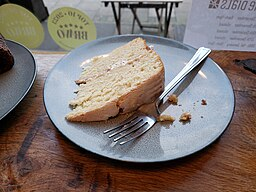

Sponge Cake
Sponge cake is a light and airy cake thatperfect for layering with cream and fruit.
Ingredients
- 300g flour
- 200gg sugar
- 150g Vegan cream cheese
- 200ml double plant cream
- 1 tsp vanilla extract
- 1 tsp bicarbonate of soda
- 1 tsp baking powder
- 1/2 tsp salt
- 200ml plant milk
- 100ml vegetable oil
- 2 tbsp fruit jam (optional)

Image source: Andy Li, Wikimedia Commons
Method
- Mix flour and sugar until well combined.
- Combine the dry ingredients with the wet ingredients, folding gently.
- Pour into a greased and lined cake tin.
- Bake at 180°C for 25-30 minutes until a skewer inserted into the center comes out clean.
- Repeat previous steps for a double layered cake.
- Allow to cool completely before slicing and layering with whipped cream and fruit.
- Whip the vegan cream cheese and double plant cream together until smooth.
- Spread the cream mixture and jam between the layers of sponge and on top.